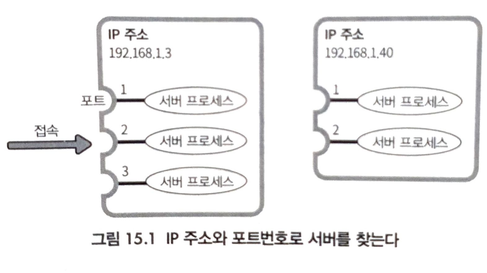
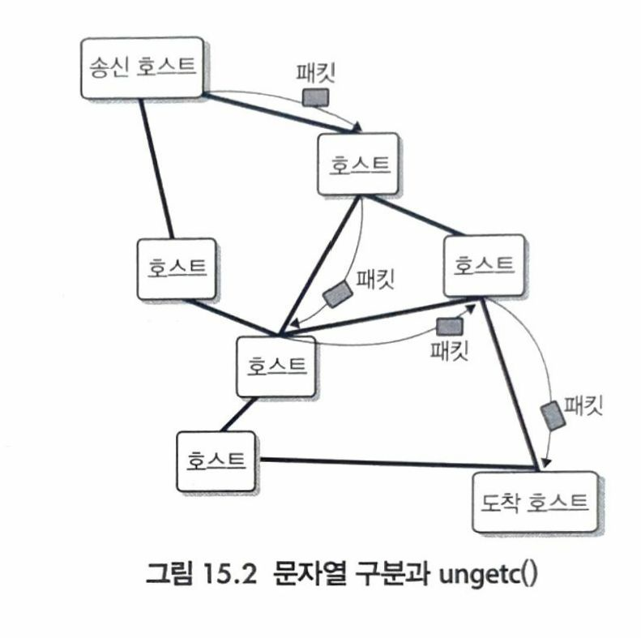
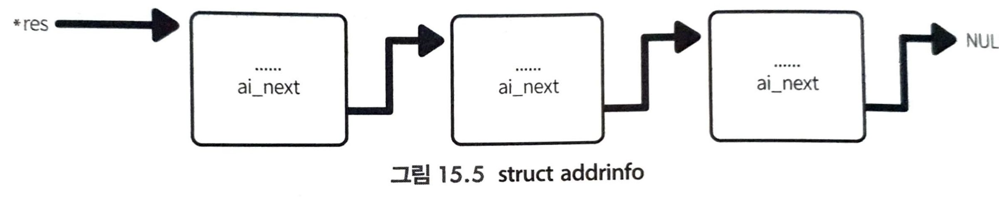

소켓 프로그래밍 -1- 인터넷 구조, 호스트명, DNS, 도메인, getaddrinfo()
인터넷 구조
- 네트워크 프로그래밍이라고 하면 전혀 다른 세계 같지만 그렇지 않다.
- 하나의 머신 안에서든, 네트워크를 넘어서든, 우리가 다루는 것은 결국 stream이다.
- stream이라면 read(), write()를 통해 데이터를 R/W 가능 하므로, 결국 stream을 어떻게 얻느냐의 차이이다.
- 저수준 프로그래밍에서는 open()을 통해 fd를 얻어 stream을 얻었다.
- 네트워크 프로그래밍에서는 네트워크 너머의 컴퓨터 이름(IP, PORT)을 커널에 그 이름을 전달해 stream을 얻게된다.
- 인터넷에서 파일 시스템의 파일 이름에 대응하는 것이 IP주소와 포트 번호
- IP주소: HOST
- PORT: 각 서버 프로세스

프로토콜: 규약
- 패킷: IP레벨에서 스트림, 데이터 뭉치

- 실제로는 호스트가 패킷을 릴레이 처럼 보낸다. 자기꺼 아니면 Pass!
호스트명, DNS, 도메인
- HOST는 IP주소로 구분 하지만, 사람이 다루기 어렵다.
- 따라서 호스트명(host name)을 사용한다.
- 호스트명 예: www.naver.com
etc/hosts에서 호스트명 <-> IP 관리
- 따라서 호스트명(host name)을 사용한다.
# /etc/hosts
127.0.0.1 localhost
::1 ip6-localhost ip6-loopback
...
- 하지만 호스트가 늘어날 때마다 모든 호스트를 /etc/hosts에 기록해야 하므로 현실적이지 않다.
- 현재는 회사나 가정 내 네트워크처럼 소수 호스트의 이름을 붙이기 위한 용도로 /etc/hosts가 사용된다.
- 컴퓨터 세계에서 이름으로 실체를 얻어내는 것을 resolve
- 호스트 명과 IP주소를 교환해주는 존재를 resolve'r'라고 한다.
- 리눅스에서는 resolver로 libc가 있어, 해당 설정은 /etc/nsswitch.conf에 기술됨
- DNS(Domain Name System)
- DNS는 호스트명을 도메인이라고 하는 영역에 나눠서 관리함으로써 호스트명의 관리를 전 세계에 분산시킴
- 도메인(Domain)
- 리눅스 디렉터리처럼 트리 구조로 관리
- 오른쪽 부터 루트 도메인!
- 루트 도메인: 리눅스 루트 디렉터리 ‘/’ 처럼
- 최상위 도메인(Top Level Domains, TLDs): com, org, kr
- 배치 .. 배치..
- 최상위 도메인(Top Level Domains, TLDs): com, org, kr
- 루트 도메인: 리눅스 루트 디렉터리 ‘/’ 처럼
- ex) 'www.example.com' 이라는 호스트 명은
- 루트 도메인: ‘’
- 최상위 도메인(Top Level Domains): .com
- ‘example.com’* 도메인
- www.example.com 호스트명
- ‘example.com’* 도메인
- 최상위 도메인(Top Level Domains): .com
- 루트 도메인: ‘’
- 각각의 도메인을 도메인 이름(Domain name)이라고 한다.
- 호스트를 루트 도메인에서 시작하여 전부 기술한 것을 FQDN(Fully Qualified Domain Name)이라고 한다.
- ‘example.com’*처럼 호스트명에 대응되지 않는 도메인명도 있다.
- 이러한 도메인은 파일 시스템에서의 디렉터리처럼 관리를 위해 존재
- 즉, example.com 도메인은 com 도메인과 다른 관리자가 있어서, 그 밑의 도메인을 독자적으로 관리한다.
- ‘example.com’* 도메인이 관리하는 도메인
- www.example.com, mail.example.com, ftp.example.com
- example.com 도메인 밑의 도메인은 example.com*도메인 관리자에게 물으면 알 수 있는 것이다.
- www.example.com의 호스트 IP주소는 example.com 도메인* 관리자에게 물어보면 된다. 이때 물을 상대는 사람이 아니라 프로그램(서버 프로세스)이다. 이러한 서버를 DNS 서버라고 한다.
- ‘example.com’* 도메인이 관리하는 도메인
- example.com*의 DNS 서버를 어떻게 찾는가?
- com 도메인의 DNS 서버에게 물으면 된다. 도메인은 트리 구조로 되어 있어, 밑의 도메인에 대해서는 그 위 도메인 관리 DNS 서버에게 문의하면 된다.
- com 도메인 서버는 누구에게 물어야 하나?
- 루트 도메인의 DNS 서버에게 물으면된다. 루트 도메인의 DNS 서버의 IP주소는 모든 DNS 서버에 직접 등록되어 있어, 문의할 필요가 없다.
이렇게 DNS가 호스트명을 IP주소로 바꿔준다.
socket
#include <sys/socket.h>
int socket(int domain, int type, int protocol);
- 기능: 소켓 생성
| return | value |
|---|---|
| 성공 | 소켓 fd |
| 실패 | -1 |
bind
#include <sys/socket.h>
int bind(int sockfd, struct sockaddr *myaddr, socklen_t addrlen);
- 기능: 소켓에 IP, PORT 부여
| return | value |
|---|---|
| 성공 | 0 |
| 실패 | -1 |
listen
#include <sys/socket.h>
int listen(int sockfd, int backlog);
- 기능: 소켓을 연결 대기 몇 개?와 연결 대기 상태로 만듬
| return | value |
|---|---|
| 성공 | 0 |
| 실패 | -1 |
accept
#include <sys/socket.h>
int accept(int sockfd, struct sockaddr *addr, socklen_t *addrlen);
- 기능: 연결 요청 시, 수락
| return | value |
|---|---|
| 성공 | 0 |
| 실패 | -1 |
connect
#include <sys/socket.h>
int connect(int sockfd, struct sockaddr *serv_addr, socklent_t addrlen);
- 기능: 지정한 sockfd 소켓에 연결 요청
| return | value |
|---|---|
| 성공 | 0 |
| 실패 | -1 |
Host Name <-> IP 변환 API
- getaddrinfo(): 호스트명, 서비스명으로부터 IP 주소, 포트 번호를 얻기 위해 사용
- getnameinfo(): IP주소나 포트 번호로부터 도메인명이나 서비스명을 얻기 위해 사용한다.
- freeaddrinfo(): 보조 API
- gai_strerror(): 보조 API
getaddrinfo():3 호스트명, 서비스명으로 부터 IP 주소, 포트 번호를 얻음
#include <sys/socket.h>
#include <sys/types.h>
#include <netdb.h>
int getaddrinfo(const char *node, const char *service,
const struct addrinfo *hints, struct addrinfo **res);
void freeaddrinfo(struct addrinfo *res);
const char *gai_strerror(int err);
struct addrinfo{
int ai_flags;
int ai_family;
int ai_socktype;
int ai_protocol;
socklen_t ai_addrlen;
struct sockaddr *ai_addr;
char *ai_canonname;
struct addrinfo *ai_next;
};
- 기능: 접속 대상인 node의 주소 후보를 res에 기재한다. service와 hints로 범위를 좁힐 수 있다.
res는 struct addrinfo의 링크드 리스트 형태를 가진다.

- struct addrinfo의 메모리 영역은 malloc()으로 할당되므로 명시적으로 해제해야한다.
- freeaddrinfo()가 free용으로 사용된다.
| return | value |
| 성공 | 0 |
| 실패 | 0 이상의 값의 에러코드 에러코드는 gai_strerror()로 문자열 변환 가능 |